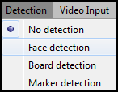

Detection
Three different detection are
implemented for now. To select the chosen one, hover the Detection
menu :

- Face detection will
launch Chehra automatic face detection and tracking system.
- Board
detection required a chessboard pattern similar to the
one used for calibration.
- Marker detection
uses personal markers but it not fully functional yet.
Once you have selected a detection,
you can add 3D models to the scene and start projecting them.